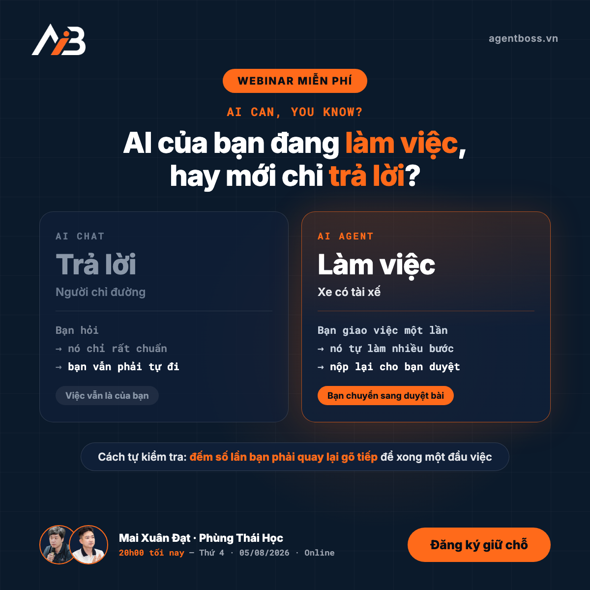

T4 · 05/08 sáng
Bài 5 — AI của bạn đang làm việc, hay mới chỉ trả lời?
Caption
AI CỦA BẠN ĐANG LÀM VIỆC, HAY MỚI CHỈ TRẢ LỜI?
Câu hỏi nghe đơn giản. Nhưng phần lớn người làm marketing sẽ trả lời nhầm.
Bạn mở ChatGPT mỗi ngày. Nhờ nó nghĩ tiêu đề, viết caption, tóm tắt tài liệu, sửa lại câu cho mượt. Bạn dùng chăm chỉ, dùng thành thạo — nên nếu được hỏi, hẳn bạn sẽ nói AI của mình đang làm việc.
Nhưng cuối tuần nhìn lại, công việc vẫn y như cũ: vẫn tự gom số từ bốn kênh, vẫn tự ngồi viết từng bài, vẫn ngập trong những việc lặp đi lặp lại. Nếu AI thật sự đang làm việc cho bạn, tại sao khối lượng việc của bạn không hề giảm?
Vì nó chưa làm việc. Nó mới đang trả lời.
Không phải bạn dùng sai. Là bạn đang dùng rất tốt MỘT LOẠI AI, và tưởng đó là tất cả những gì AI làm được.
Hãy hình dung thế này. AI Chat giống người chỉ đường: bạn hỏi đi lối nào, nó chỉ rất chuẩn, nhưng bạn vẫn phải tự đi. AI Agent giống chiếc xe có tài xế: bạn nói địa chỉ, rồi nó chở bạn tới.
Cụ thể trong nghề của bạn. Muốn có một bài content bằng ChatGPT: bạn tự nghĩ góc, tự gõ yêu cầu, nó trả về bản nháp, bạn copy ra chỗ khác, tự sửa giọng, tự tìm ảnh, tự đăng. Nó giúp bạn viết nhanh hơn — nhưng người làm vẫn là bạn, từ đầu đến cuối.
Với một Agent, bạn giao việc một lần: "đọc lịch nội dung tuần này, viết theo giọng ba bài cũ của tôi, xuất đủ bản cho Facebook và TikTok". Nó tự mở file, tự đọc, tự viết, tự trình bày, rồi nộp lại cho bạn duyệt. Bạn từ người ngồi làm chuyển thành người duyệt bài.
Có một cách rất nhanh để tự kiểm tra mình đang ở loại nào: ĐẾM SỐ LẦN BẠN PHẢI QUAY LẠI GÕ TIẾP để xong một đầu việc. Nếu phải quay lại năm bảy lần, bạn vẫn đang dùng AI Chat. Còn nếu giao một lần rồi đi làm việc khác, đó mới là Agent.
Và đây là chỗ đáng suy nghĩ: nếu suốt thời gian qua bạn mới dùng phần chỉ đường, thì phần chở đi — phần nặng nhất, tốn thời gian nhất trong công việc của bạn — vẫn chưa được đụng tới.
Vậy những việc nào của bạn giao hẳn đi được, chứ không phải chỉ hỏi cho nhanh?
Đó chính là thứ được trả lời trong webinar miễn phí "AI CAN, YOU KNOW? — Cách AI Agent giúp ích cho người làm Marketing mà bạn chưa biết", 20h00 tối nay. Anh Mai Xuân Đạt cùng host Phùng Thái Học sẽ bóc tách những hiểu nhầm khiến đa số marketer mới dùng 10% sức mạnh AI, và mở bản đồ những đầu việc marketing mà Agent gánh được — đúng nghề bạn, đúng công ty bạn.
🎁 Nếu tối nay bạn bận, vẫn nên giữ chỗ: người đăng ký nhận quyền học thử miễn phí 5 bài đầu khóa Agent Boss Marketing, tự tay làm lại trên chính công việc của mình, có AI chấm bài và phản hồi. Không xem live thì học sau — chỗ ngồi vẫn là của bạn.
📌 20h00 – 21h30 · Hôm nay, 05/08/2026 · Online · Miễn phí
Giữ chỗ trước giờ lên sóng: [link đăng ký]
Visual
